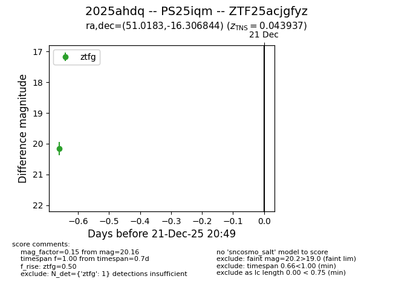
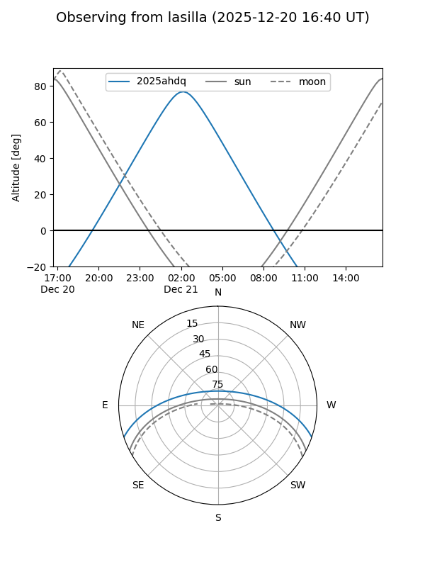
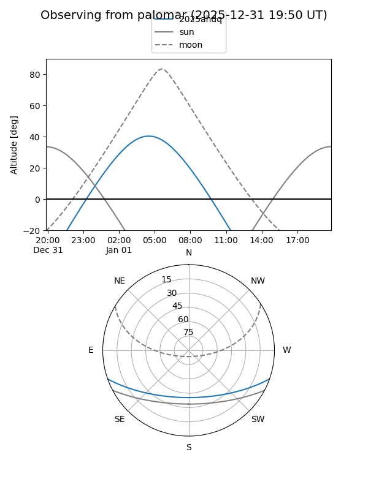

2025ahdq
Target 2025ahdq at 2025-12-21 11:23
Aliases and brokers:
FINK: fink-portal.org/ZTF25acjgfyz
Lasair: lasair-ztf.lsst.ac.uk/objects/ZTF25acjgfyz
ALeRCE: alerce.online/object/ZTF25acjgfyz
TNS: wis-tns.org/object/2025ahdq
YSE: ziggy.ucolick.org/yse/transient_detail/2025ahdq
alt names
ZTF25acjgfyz (ztf,fink_ztf)
2025ahdq (tns,yse)
PS25iqm (panstarrs)
Coordinates:
equatorial (ra, dec) = 51.0183,-16.30684
equatorial (HMS+DMS) = 03:24:04.40,-16:18:24.64
galactic (l, b) = (203.9032,-53.09940)
Flags:
Photometry:
last ztfg=20.16
1 ztfg detections
Lightcurve

Visibility


Additional plots